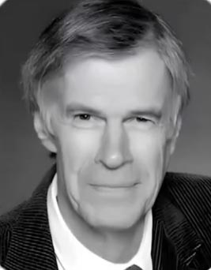
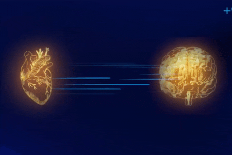
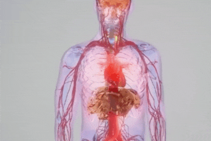
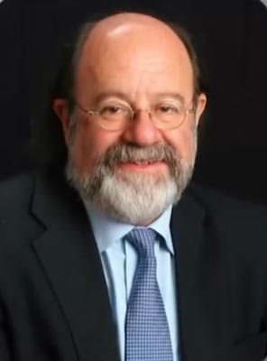

جواب
در سال 1991 دکتر جیمز آرمور

یکی از نخستین دانشمندانی بود که شبکه ای از نورون های قلبی رو کشف کرد...

و در سال 1991 دکتر رولین مک کریتی از موسسه آمریکایی هارت مث...
تحقیقاتی که نشان داد قلب و مغز بطور مداوم در حال ارسال اطلاعات به یکدیگر هستند...


این تحقیقات نشان داد که سیگنال های قلبی بر فعالیت مغز اثر میگذارد...

بر روی بیماران پیوند قلب مطالعه شد که نشان داد برخی خاطرات و ویژگی های شخصیتی اهداکننده منتقل میشوند...
در سال 2003 پژوهشگران موسسه هارت مث کشف کردند که قلب قویترین میدان مغناطیسی بدن را تولید میکند...
پس این جمله معروف که میگه با قلبت تصمیم بگیر فقط استعاره نیست بلکه حقیقت علمی است...
نکات تکمیلی
- قلب دارای یک شبکه عصبی مستقل است که بیش از ۴۰٬۰۰۰ نورون دارد؛ یعنی قلب خودش میتواند اطلاعات را پردازش کند، بدون آنکه مغز مستقیماً دخالت کند.
- سیگنالهای الکتریکی و شیمیایی قلب نه تنها بر مغز، بلکه بر سیستم ایمنی، هورمونها و حتی رفتارهای اجتماعی اثر میگذارند.
- تحقیقات بیماران پیوند قلب نشان دادهاند که خصوصیات شخصیتی، خاطرات و حتی ترجیحات غذایی اهداکننده میتواند در گیرنده تجربه شود؛ این یافتهها نشاندهنده حافظه سلولی در قلب هستند.
- میدان مغناطیسی قلب ۵۰۰۰ برابر قویتر از مغز است و میتواند روی بدن خود فرد و اطرافیان تأثیر بگذارد، که اهمیت قلب را فراتر از عملکرد فیزیولوژیک ساده نشان میدهد.
- مطالعات نوروفیزیولوژی و روانشناسی نشان میدهند که تصمیمگیری و خلقوخو انسان تا حد زیادی توسط سیگنالهای قلب هدایت میشود.
- قرآن به عنوان یک متن ۱۴۰۰ ساله، قلب را مرکز احساسات و آگاهی معرفی کرده است؛ یافتههای علمی امروز نشان میدهند که این معرفی کاملاً مطابق با واقعیت علمی است و نشاندهنده اعجاز علمی قرآن است.